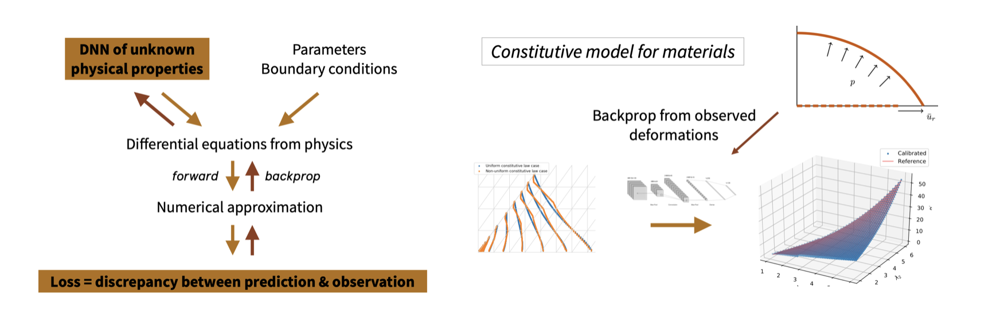

Learning Constitutive Relations from Indirect Observations Using Deep Neural Networks
Kailai Xu (co-first author), Huang, Daniel Z. (co-first author), Charbel Farhat, and Eric Darve. "Learning Constitutive Relations from Indirect Observations Using Deep Neural Networks"
We present a new approach for predictive modeling and its uncertainty quantification for mechanical systems, where coarse-grained models such as constitutive relations are derived directly from observation data. We explore the use of neural networks to represent the unknowns functions (e.g., constitutive relations). Its counterparts, like piecewise linear functions and radial basis functions, are compared, and the strength of neural networks is explored. The training and predictive processes in this framework seamlessly combine the finite element method, automatic differentiation, and neural networks (or its counterparts). Under mild assumptions, we establish convergence guarantees. This framework also allows uncertainty quantification analysis in the form of intervals of confidence. Numerical examples on a multiscale fiber-reinforced plate problem and a nonlinear rubbery membrane problem from solid mechanics demonstrate the effectiveness of the framework.
The solid mechanics equation can be formulated as
where $u$ is the displacement, $\mathbf{x}$ is the location, $p$ is the external pressure, $\mathcal{F}$ is the external force, $\mathcal{M}(u(\mathbf{x}),\dot u(\mathbf{x}), \mathbf{x})$ is the stress ($\mathcal{M}$ is also called the constitutive law), $\mathcal{P}(u(\mathbf{x}), \mathcal{M}(u(\mathbf{x}),\dot u(\mathbf{x}), \mathbf{x}))$ is the internal force. For a new material or nonhomogeneous material, the constitutive relation $\mathcal{M}$ is not known and we want to estimate it. In laboratory, usually only $u(\mathbf{x})$ can be measured but the stress cannot. The idea is to substitute the constitutive law relation–in this work, we assume $\mathcal{M}$ only depends on $u(\mathbf{x})$ and the neural network is $\mathcal{M}_{\theta}(u(\mathbf{x}))$, where $\theta$ is the unknown parameter.
We train the neural network by solving the optimization problem
